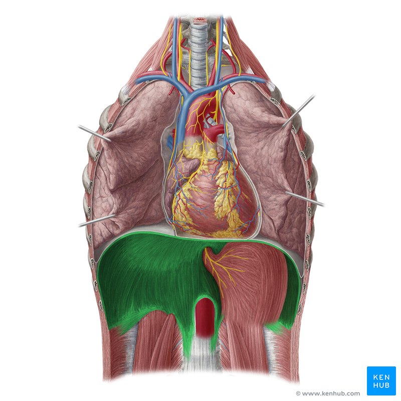
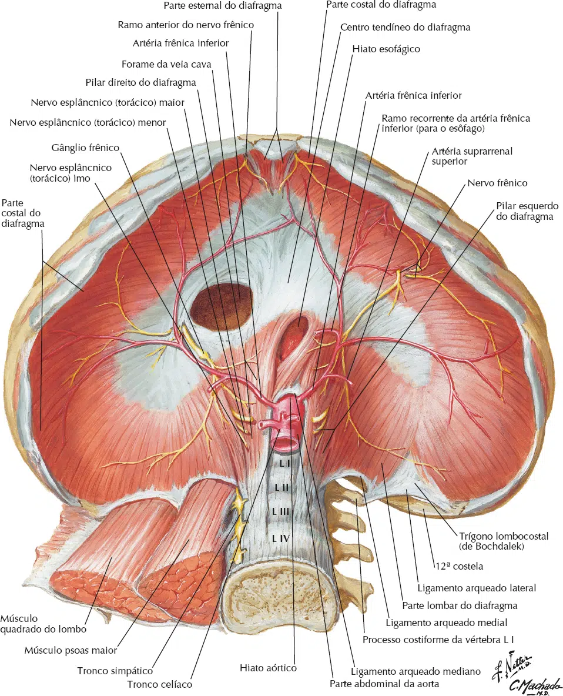
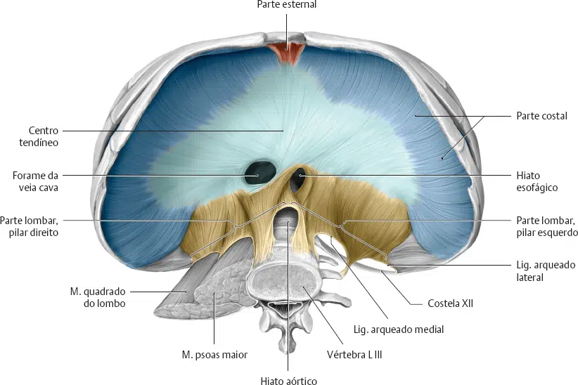
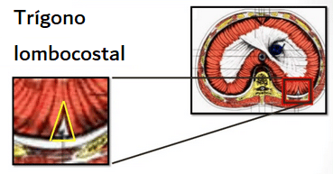
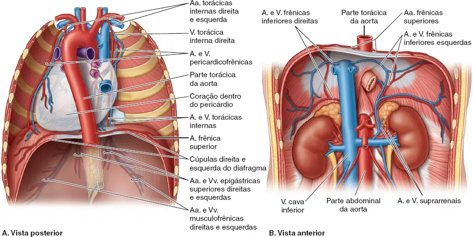
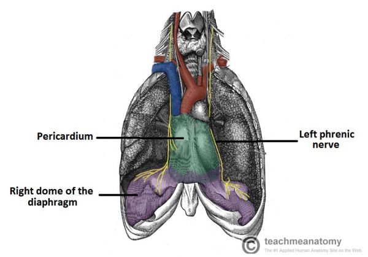
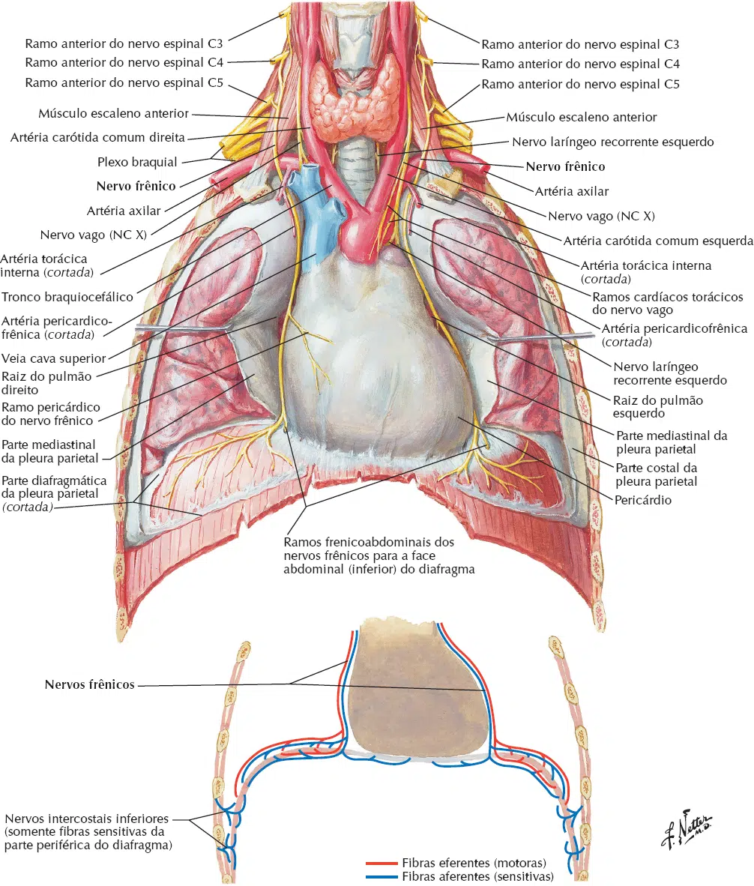

O nome diafragma é originário do grego dia (através) phragma (tabique = parede frágil).
O m. diafragma é uma lâmina musculotendínea de cúpula dupla, localizada no aspecto mais inferior da caixa torácica.
A face superior basicamente convexa fica voltada para a cavidade torácica, e a face inferior côncava fica voltada para a cavidade abdominal.
Ele tem duas funções principais:
Separa a cavidade torácica da cavidade abdominal;
Passa por contração e relaxamento, alterando o volume da cavidade torácica e dos pulmões, produzindo inspiração e expiração.

Posição
O diafragma está localizado no aspecto mais inferior da caixa torácica, preenchendo a abertura torácica inferior.
Atua como o assoalho da cavidade torácica e o teto da cavidade abdominal.
O nível das cúpulas do diafragma varia de acordo com:
Fase da respiração (inspiração ou expiração);
Postura (p. ex., decúbito dorsal ou ortostática);
Tamanho e grau de distensão das vísceras abdominais.
Tem três anexos periféricos:
Parte esternal: formada por duas alças musculares que se fixam à face posterior do processo xifoide; essa parte nem sempre está presente.
Parte costal: formada por alças musculares largas que se fixam às faces internas das seis cartilagens costais inferiores e suas costelas adjacentes de cada lado; as partes costais formam as cúpulas direita e esquerda.
Parte lombar: originada de dois arcos aponeuróticos, os ligamentos arqueados medial e lateral, e das três vértebras lombares superiores; a parte lombar forma os pilares musculares direito e esquerdo que ascendem até o centro tendíneo.

Pilares
As partes do diafragma que surgem das vértebras são tendinosas e são conhecidas como pilares direito e esquerdo:
Pilar direito – Surge de L1-L3 e seus discos intervertebrais.
Algumas fibras da crista direita envolvem a abertura esofágica, atuando como um esfíncter fisiológico para evitar o refluxo do conteúdo gástrico para o esôfago.
Pilar esquerdo – Surge de L1-L2 e seus discos intervertebrais.
As fibras musculares do diafragma se combinam para formar um tendão central.
Este tendão sobe para se fundir com a superfície inferior do pericárdio fibroso.
De cada lado do pericárdio, o diafragma sobe para formar cúpulas esquerdas e direitas.
Em repouso, a cúpula direita fica um pouco mais alta que a esquerda, devido à presença do fígado.
Ligamentos arqueados
Os pilares direito e esquerdo e o ligamento arqueado mediano fibroso, que se une a eles enquanto se curva sobre a face
anterior da aorta, formam o hiato aórtico.
O diafragma também está fixado de cada lado aos ligamentos arqueados medial e lateral.
O ligamento arqueado medial é um espessamento da fáscia que recobre o músculo psoas maior, estendendo-se entre os corpos das vértebras lombares e a extremidade do processo transverso de L1.
O ligamento arqueado lateral cobre o músculo quadrado lombar, continuando do processo transverso de L12 até a extremidade da 12ª costela.

Aberturas
O diafragma divide as cavidades torácica e abdominal.
Assim, qualquer estrutura que passe entre as duas cavidades perfurará o m. diafragma.
Existem três aberturas principais que atuam como condutores para essas estruturas:
Forame da veia cava inferior: é uma abertura no centro tendíneo, a mais superior das três grandes aberturas do m. diafragma, situa-se no nível do disco entre as vértebras T8 e T9.
Também atravessam o forame da veia cava os ramos terminais do nervo frênico direito e alguns vasos linfáticos em seu trajeto do fígado até os linfonodos frênicos médios e mediastinais.
Hiato esofágico: é uma abertura oval para o esôfago no músculo do pilar direito do diafragma no nível da vértebra T10.
Há decussação (cruzamento) das fibras do pilar direito do diafragma inferiormente ao hiato, formando um esfíncter muscular para o esôfago que o constringe quando o diafragma se contrai.
Também dá passagem aos troncos vagais anterior e posterior, aos ramos esofágicos dos vasos gástricos esquerdos e a alguns vasos linfáticos.
Hiato aórtico: é a abertura posterior ao diafragma para a aorta descendente.
A a. aorta passa entre os pilares do diafragma, posteriormente ao ligamento arqueado mediano, que está no nível da margem inferior da vértebra T12.
O hiato aórtico também dá passagem ao ducto torácico e, algumas vezes, às veias ázigo e hemiázigo.
Pequenas aberturas
Além das três aberturas principais, existem duas aberturas menores em cada pilar dão passagem aos nervos esplâcnicos torácicos maior e menor.
Os troncos simpáticos ganglionares estão geralmente atrás dos ligamentos arqueados mediais.
Aberturas para pequenas veias são frequentemente encontradas no centro tendíneo.
O trígono esternocostal (de Larrey) está localizado entre as fixações esternal e costal do diafragma.
Esse trígono dá passagem aos vasos linfáticos da face diafragmática do fígado e aos vasos epigástricos superiores.
O trígono lombocostal também chamado de vertebrocostal está entre a porção diafragmática costal e o ligamento arqueado lateral.
Esse trígono favoreve a comunicação dos tecidos adiposos subpleural e renal posterior, também dá passagem ao tronco simpático e nervos esplâncnicos torácicos.

Vascularização
O suprimento arterial da face superior (torácica) é feito pelas artérias frênicas superiores (ramos da parte torácica da aorta) e artérias pericardiofrênicas e musculofrênicas (ramos da artéria torácica interna).
A face inferior (abdominal): artérias frênicas inferiores (ramos da parte abdominal da aorta ou do tronco celíaco).
O suprimento venoso segue as artérias acima mencionadas e seu fluxo é dado da seguinte maneira:
Veias pericardicofrênicas e musculofrênicas (drenam nas veias intercostais posteriores e torácicas internas);
Veias frênicas superiores (drenam nas veias ázigo e hemiázigo);
Veias frênicas inferiores (drenam na veia cava inferior).

Inervação
A inervação da musculatura diafragmática é dada pelo nervo frênico, que se origina dos ramos ventrais dos segmentos C3 a C5.
É responsável por todo o suprimento motor, além de fibras sensitivas para dor e propriocepção para a maior parte do músculo, sendo o restante periférico suprido pelos seis ou sete nervos intercostais posteriores e nervo subcostal.
As metades do diafragma (conhecidas como hemidiafragma) são inervadas por um nervo frênico, o lado esquerdo recebe um ramo e vice-versa.
Este nervo também contribui para a parte mediastinal da pleura parietal e o pericárdio.


O nervo frênico desce em sentido oblíquo com a veia jugular interna através do músculo escaleno anterior.
No lado esquerdo, o nervo frênico cruza anteriormente à primeira parte da artéria subclávia; no lado direito, situa-se sobre
o músculo escaleno anterior e cruza anteriormente à segunda parte da artéria subclávia.
Nos dois lados, segue posteriormente à veia subclávia e anteriormente à artéria torácica interna quando entra no tórax.